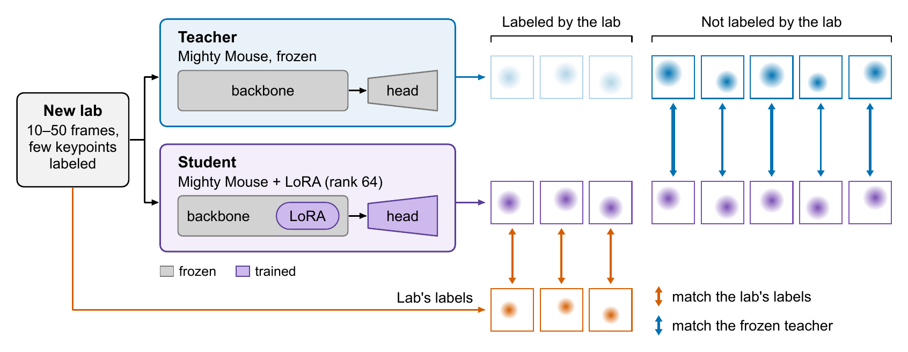
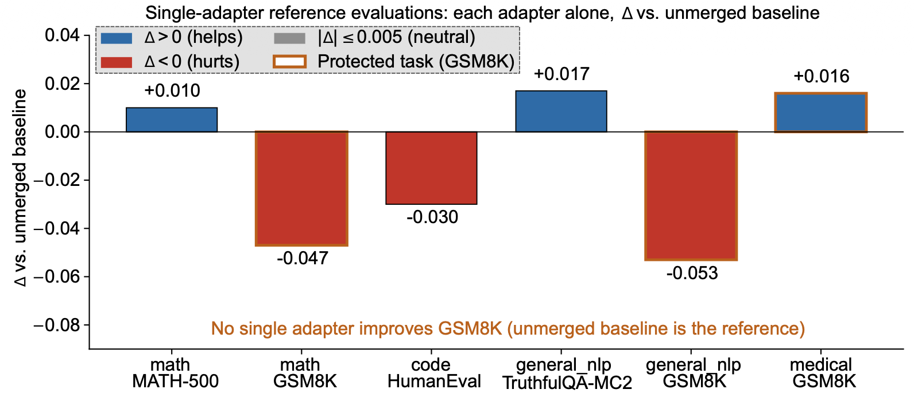
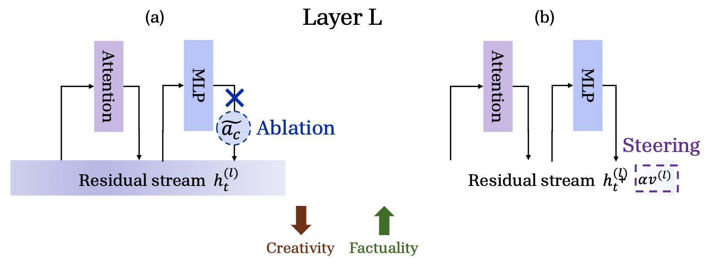
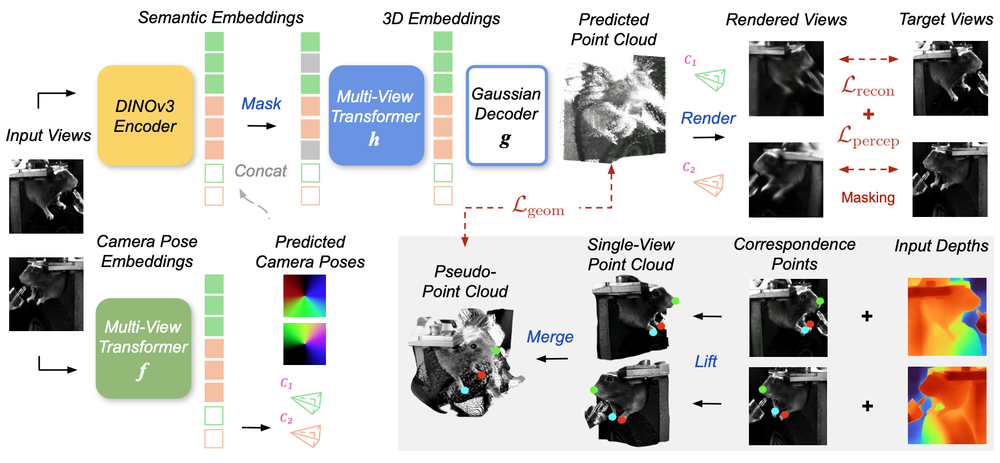
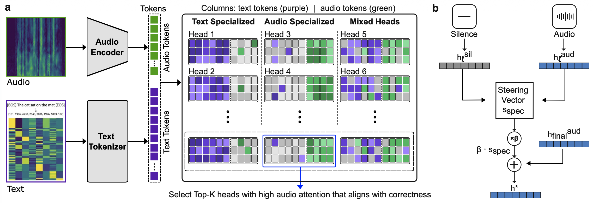
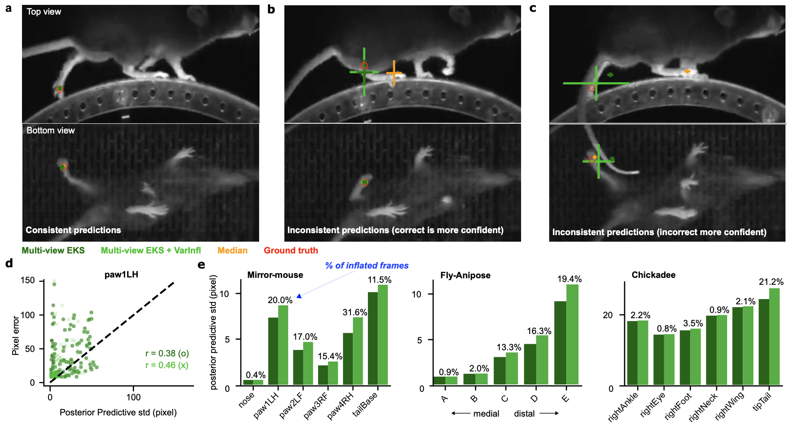

Publications
Lightning Pose 3D: An Uncertainty-Aware Framework for Data-Efficient Multi-View Animal Pose Estimation
End-to-end uncertainty-aware pipeline for multi-view 3D animal pose estimation, combining cross-view transformers, pseudo-label distillation, and a variance-inflated Ensemble Kalman Smoother. Released open-source in Lightning Pose and adopted by labs worldwide.
Nature Methods (in revision) / Paper / Code / bibtex
@article{aharon2026lightning,
title={Lightning Pose 3D: an uncertainty-aware framework for data-efficient multi-view animal pose estimation},
author={Aharon, Lenny and Whiteway, Matthew R and Sikka, Karan and Lee, Keemin and Wang, Yanchen and Chettih, Selmaan and Midler, Benjamin and Witten, Ilana B and Aronov, Dmitriy and International Brain Laboratory and others},
journal={bioRxiv},
pages={2026--04},
year={2026},
publisher={Cold Spring Harbor Laboratory}
}

BEAST3D: Animal Behavioral Analysis and Neural Encoding from Multi-View Video via Gaussian Splatting
A self-supervised 3D foundation model that predicts 3D Gaussian splats from as few as four camera views, learning transferable features for downstream pose estimation and neural encoding.
NeurIPS 2026 Oral / Paper / Website / bibtex
@inproceedings{wang2026beast3d,
title={BEAST3D: Animal Behavioral Analysis and Neural Encoding from Multi-View Video via Gaussian Splatting},
author={Wang, Yanchen and Aharon, Lenny and Zhu, Wangshu and Daruwalla, Kyle and Zhang, Linghua and Zou, Jiaru and Chettih, Selmaan N and Hou, Xun Helen and Paninski, Liam and Whiteway, Matthew R},
booktitle={Advances in Neural Information Processing Systems (NeurIPS)},
year={2026}
}
Mighty Mouse: A Pose Foundation Model That Remembers What You Never Labeled
A pose foundation model trained across independently annotated lab datasets, plus Anchored LoRA, a parameter-efficient fine-tuning method that lets labs adapt the model to their own labels without forgetting the keypoints they never annotated.
NeurIPS 2026 Workshop on Foundation Models for the Brain and Body Spotlight / Paper / bibtex
@inproceedings{aharon2026mightymouse,
title={Mighty Mouse: A Pose Foundation Model That Remembers What You Never Labeled},
author={Aharon, Lenny and Daruwalla, Kyle and Hou, Xun Helen and Kondo, Masashi and Matsuzaki, Masanori and Sehara, Keisuke and Cazettes, Fanny and Aberlenc, Aurelien and International Brain Laboratory and Paninski, Liam and Whiteway, Matthew R},
booktitle={NeurIPS 2026 Workshop on Foundation Models for the Brain and Body},
year={2026}
}

Audit Before You Merge: Provenance, Probing, and Continual LoRA Composition
Continual LoRA adapter merging on Llama-3.1-8B and Mistral-7B, with a provenance audit and a leakage-free probing protocol that corrects ~10pp of inflated catastrophic-forgetting estimates.
ICML 2026 Workshop on Continual Adaptation at Scale / Paper / Code / bibtex
@inproceedings{aharon2026audit,
title={Audit Before You Merge: Provenance, Probing, and Continual LoRA Composition},
author={Aharon, Lenny and Glazer, Neta and Aharon, Lior},
booktitle={ICML 2026 Workshop on Continual Adaptation at Scale: Towards Sustainable AI},
year={2026}
}

Creativity and Hallucinations Share Mechanisms in LLMs
COLM 2026 / Paper

Sparse-View Interpretable 3D Animal Behavior Representations for Neural Encoding and Decoding
ICLR 2027 (under review) / Paper

Are Audio-Language Models Listening? Audio-Specialist Heads for Adaptive Audio Steering
Interspeech 2026 / Paper / bibtex
@inproceedings{glazer2026audio,
title={Are Audio-Language Models Listening? Audio-Specialist Heads for Adaptive Audio Steering},
author={Glazer, Neta and Aharon, Lenny and Fetaya, Ethan},
booktitle={Interspeech 2026},
year={2026}
}

An Uncertainty-Aware Framework for Data-Efficient Multi-View Animal Pose Estimation
AAAI 2026 Workshop on Neuro for AI & AI for Neuro Spotlight / Paper / Code / bibtex
@article{aharon2025uncertainty,
title={An Uncertainty-Aware Framework for Data-Efficient Multi-View Animal Pose Estimation},
author={Aharon, Lenny and Lee, Keemin and Sikka, Karan and Chettih, Selmaan and Hurwitz, Cole and Paninski, Liam and Whiteway, Matthew R},
journal={arXiv preprint arXiv:2510.09903},
year={2025}
}

Improved Calibration-Free Multi-View Pose Estimation with the Variance-Inflated Ensemble Kalman Smoother
CVPR 2025 CV4Animals Workshop Oral / Paper / Code
